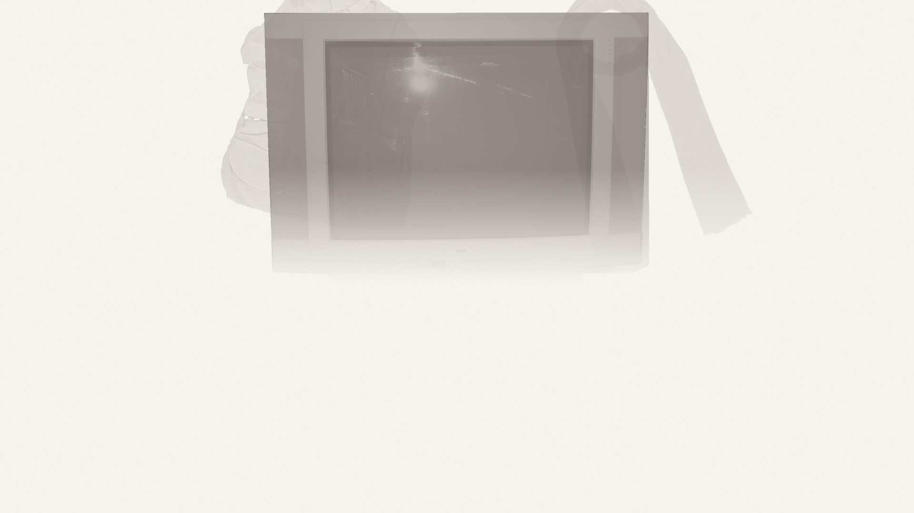

下午 2:32
回看
存档
读档
Auto
已读快进
设置
标题
点击 / 空格继续 · Ctrl 已读快进 · Esc 设置

一部家庭录像
THURSDAY · 14:32
下
午
的
节
目
THE AFTERNOON PROGRAM
开始
START
继续
CONTINUE
读档
LOAD
设置
CONFIG
你小时候，也来看过。
短篇恐怖视觉小说 · v0.6
含死亡、动物受伤、窒息暗示及突发惊吓，可在设置中关闭。
素材来源
录像结束
下午的节目。
返回标题
THE AFTERNOON PROGRAM
正在准备录像
正在准备画面与声音，请稍候。
0 / 1
重新载入
×